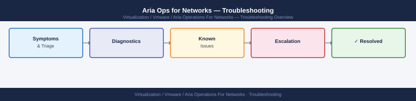

Aria Operations for Networks — Escalation¶

Before you begin¶
- Access required: SSH ubuntu@ access to the Platform VM; vRNI UI admin access; Broadcom support account at support.broadcom.com with active Aria Ops for Networks entitlement
- Note: The Platform VM SSH user is
ubuntu, notroot— runsudofor privileged commands - Do NOT power off the Platform VM during an active incident without GSS direction — the in-memory flow database may not survive an unclean shutdown
- Do NOT run a PAK upgrade if the platform is already degraded — the upgrade process may fail and leave the platform in an unrecoverable state
- Do NOT remove or reconfigure Proxy VMs during the investigation — the flow collection topology is what GSS uses to trace where data is being lost
Pre-Escalation Self-Check¶
Run these before opening the case.
| Check | Command / Location | Expected result |
|---|---|---|
| vRNI version | vRNI UI → Settings → Overview → Version | Note full version (e.g. 6.12.0) |
| Platform VM status | vSphere Client: check power state of vRNI Platform VM | Powered on, VMware Tools running |
| Proxy VM status | vSphere Client: check power state of all vRNI Proxy VMs | All powered on |
| UI accessibility | Browse to https://<vrni-fqdn>/ |
Login page loads |
| VAMI accessibility | Browse to https://<vrni-fqdn>:5480 |
VAMI login page loads |
| Data source status | vRNI UI → Settings → Data Sources | All sources show Connected |
| Flow data in UI | vRNI UI → Dashboard → Traffic Overview | Recent flows visible (within 15 min) |
| Platform disk space | SSH: df -h |
All partitions below 85% used |
Step-by-Step Data Collection¶
1. Get the vRNI version and platform VM health¶
In the vRNI UI: click Settings (top right) → Overview → note the platform version and build number.
# SSH to the Platform VM as ubuntu
ssh ubuntu@<vrni-fqdn>
# Check platform service status
sudo systemctl status vrni
# Disk space (flow database fills the /var/log or /data partition)
df -h
# Memory and CPU
free -h
top -bn1 | head -20
ubuntu@vrni-platform:~$ sudo systemctl status vrni
● vrni.service - vRealize Network Insight Platform
Loaded: loaded (/etc/systemd/system/vrni.service; enabled; vendor preset: enabled)
Active: active (running) since Thu 2024-01-18 14:32:15 UTC; 2 days ago
Main PID: 4521 (java)
Tasks: 47 (limit: 4915)
Memory: 3.2G
CPU: 2h 14m 32s
CGroup: /system.slice/vrni.service
└─4521 /usr/lib/jvm/java-11-openjdk-amd64/bin/java -Xmx6g...
ubuntu@vrni-platform:~$ df -h
Filesystem Size Used Avail Use% Mounted on
/dev/sda1 50G 38G 9.2G 82% /
/dev/sda2 200G 187G 6.8G 97% /data
/dev/sda3 20G 18G 1.2G 94% /var/log
tmpfs 7.8G 0 7.8G 0% /dev/shm
ubuntu@vrni-platform:~$ free -h
total used free shared buff/cache available
Mem: 15Gi 9.8Gi 2.1Gi 256Mi 3.2Gi 4.9Gi
Swap: 4.0Gi 1.2Gi 2.8Gi
ubuntu@vrni-platform:~$ top -bn1 | head -20
top - 14:47:33 up 2 days, 3:15, 1 user, load average: 2.34, 2.18, 1.89
Tasks: 187 total, 3 running, 184 sleeping, 0 stopped, 0 zombie
%Cpu(s): 18.4 us, 3.2 sy, 0.0 ni, 77.8 id, 0.4 wa, 0.2 hi, 0.0 si, 0.0 st
MiB Mem : 15360.0 total, 2156.3 free, 10038.4 used, 3165.3 buff/cache
MiB Swap: 4096.0 total, 2867.2 free, 1228.8 used. 5017.6 avail Mem
PID USER PR NI VIRT RES SHR S %CPU %MEM TIME+ COMMAND
4521 root 20 0 8456m 3.2g 1.8g S 24.5 21.4 214:32 java
5847 ubuntu 20 0 12m 4.2m 3.6m S 0.8 0.0 0:02 sshd
1203 root 20 0 892m 412m 156m S 1.2 2.7 18:45 cassandra
Common errors
Permission denied (publickey). — Verify the SSH key
2. Generate the support bundle¶
Method 1 — Via SSH (recommended for any severity):
# SSH to the Platform VM as ubuntu
ssh ubuntu@<vrni-fqdn>
# Generate the support bundle
sudo /etc/init.d/support-bundle.sh
# Bundle is written to /data/support-bundles/
ls -lh /data/support-bundles/
# Copy to a local machine for upload
scp ubuntu@<vrni-fqdn>:/data/support-bundles/<bundle-filename>.tar.gz /tmp/
ubuntu@vrni-platform-01.corp.local's password:
Welcome to Ubuntu 20.04.3 LTS (GNU/Linux 5.4.0-42-generic x86_64)
Last login: Wed Mar 15 10:22:14 2024 from 192.168.1.50
Generating support bundle...
Collecting system logs...
Collecting network diagnostics...
Collecting application data...
Support bundle generation completed successfully.
Bundle saved to: /data/support-bundles/vrni-support-bundle-20240315-102847.tar.gz
total 2.4G
-rw-r--r-- 1 ubuntu ubuntu 2.4G Mar 15 10:28 vrni-support-bundle-20240315-102847.tar.gz
-rw-r--r-- 1 ubuntu ubuntu 1.8G Mar 14 14:15 vrni-support-bundle-20240314-141532.tar.gz
vrni-support-bundle-20240315-102847.tar.gz 100% 2.4GB 18.5MB/s 02:09
Common errors
Permission denied (publickey,password). — Verify the ubuntu user account is enabled on the Platform VM and SSH key/password credentials are correct.
/etc/init.d/support-bundle.sh: command not found — Confirm the Aria Operations for Networks version is installed and the support bundle script exists; check /opt/vrni/bin/ if the path differs.
scp: /data/support-bundles/<bundle-filename>.tar.gz: No such file or directory — Replace <bundle-filename> with the actual bundle filename shown in the ls output, or verify the bundle generation completed without errors.
Method 2 — Via VAMI UI:
- Browse to
https://<vrni-fqdn>:5480and log in. - Click Support → Generate Support Bundle.
- Download the resulting archive.
3. Collect data source status and error details¶
In the vRNI UI: 1. Click Settings → Data Sources. 2. Note the status of each data source (Connected / Disconnected / Error). 3. For any source showing an error: click the source name and note the exact error message. 4. Export the data source list: Settings → Data Sources → Export (or screenshot the list).
# From the Platform VM — check network connectivity to data sources
# Replace <vcenter-ip> with an actual data source IP
ping -c 4 <vcenter-ip>
nc -zv <vcenter-ip> 443
PING 192.168.1.45 (192.168.1.45) 56(84) bytes of data.
64 bytes from 192.168.1.45: icmp_seq=1 ttl=64 time=2.34 ms
64 bytes from 192.168.1.45: icmp_seq=2 ttl=64 time=2.18 ms
64 bytes from 192.168.1.45: icmp_seq=3 ttl=64 time=2.41 ms
64 bytes from 192.168.1.45: icmp_seq=4 ttl=64 time=2.29 ms
--- 192.168.1.45 statistics ---
4 packets transmitted, 4 received, 0% packet loss, time 3005ms
rtt min/avg/max/stddev = 2.18/2.30/2.41/0.09 ms
Connection to 192.168.1.45 443 port [tcp/https] succeeded!
Common errors
ping: unknown host <vcenter-ip> — Replace the literal <vcenter-ip> placeholder with the actual IP address or FQDN of your vCenter or data source.
nc: connect to 192.168.1.45 port 443 (tcp) failed: Connection refused — Verify the vCenter service is running and listening on port 443, or check firewall rules between the Platform VM and data source.
ping: sendto: No route to host — Confirm network routing and VLAN configuration between the Platform VM and data source network segment.
4. Write the timeline¶
vRNI version: 6.12.0 build XXXXXXXX
Platform VM: vrni-platform-01.corp.local
Proxy VMs: vrni-proxy-01 (vSphere), vrni-proxy-02 (NSX)
Data sources: 3 vCenter + 2 NSX + 4 physical switches
Issue first observed: 2026-06-14 09:00 UTC
Last confirmed flow data: 2026-06-14 08:30 UTC
Changes in 24h before the issue:
- 08:00: vRNI PAK upgrade from 6.11 to 6.12.0 applied
- 08:45: Upgrade completed; platform VM restarted
- 09:00: UI accessible but all data sources show "Disconnected"
- 09:10: Flow overview dashboard shows no data since 08:30 UTC
Steps already taken:
- VAMI accessible; platform services appear running
- Data source "Test Connection" fails for all 9 sources
- Proxy VM ping to vCenter succeeds (network not the issue)
- Did NOT delete data sources or run another PAK upgrade
Blast radius: All network flow analytics unavailable; 9 data sources disconnected
How to Open the SR on support.broadcom.com¶
-
Go to support.broadcom.com and sign in with your Broadcom account.
-
Click Open a Support Request.
-
Under Product Group, select VMware Cloud Foundation and Virtualization → VMware Aria Operations for Networks (or search "vRealize Network Insight").
-
Under Version, select your vRNI version from Step 1.
-
Under Severity, select:
- Severity 1 — Critical: Platform VM completely unreachable; all flow data missing for more than 2 hours; data integrity issue suspected; production network visibility is blind; no workaround
- Severity 2 — High: All data sources disconnected but Platform VM is accessible; upgrade failed and platform is in an inconsistent state; Proxy VMs not collecting
- Severity 3 — Medium: Single data source in error; specific flow type missing; UI accessible with some data visible; workaround exists
-
Severity 4 — Low: How-to question, pre-upgrade planning, data source configuration help
-
In the Summary field: product + symptom + scope. Example:
vRNI 6.12 — all 9 data sources disconnected after PAK upgrade 6.11→6.12, flow data collection stopped since 08:30 UTC. -
In the Description field, paste:
- vRNI version from Step 1
- Platform VM disk space and service status from Step 1
- Data source error messages from Step 3
-
The timeline from Step 4
-
Under Attachments, upload the support bundle from Step 2.
-
Click Submit. You will receive a case number by email immediately.
-
Severity 1 only: call Broadcom/VMware support after submission:
- North America: +1 877-486-9273 (24×7 for Severity 1)
- EMEA: +44 (0)3453 700 100
- State "Severity 1 — Aria Ops for Networks Platform VM down, all flow visibility lost" at the start of the call.
Escalation Path¶
Step 1 — Open case at support.broadcom.com with support bundle and data source status attached
↓
Step 2 — T1 support engineer acknowledges (Sev1: < 30 min; Sev2: < 2 hr)
↓
Step 3 — If no meaningful progress in 30 minutes for Sev1 or 2 hours for Sev2:
→ Reply: "Requesting escalation to Aria Networks Senior Engineer"
→ State: "[platform down / all sources disconnected / flow data missing since X]"
↓
Step 4 — vRNI T2 Senior Engineer is assigned
→ They will request SSH access to the Platform VM for a live session
→ Have ubuntu@ SSH access and VAMI credentials ready
↓
Step 5 — If issue is a confirmed product bug (upgrade regression, flow DB corruption):
→ T2 escalates to Aria Networks Engineering
→ Engineering provides a targeted recovery procedure or hotfix
↓
Step 6 — For Sev1 with no resolution after 2 hours:
→ Request CritSit escalation; contact your Broadcom TAM
→ TAM convenes bridge call with GSS and Engineering
What NOT to Do¶
| Do NOT do this | Why | What to do instead |
|---|---|---|
| Delete data sources during investigation | Data source config contains the connection history and last-good-state needed for GSS to trace the failure | Leave all data sources in place; only delete if GSS specifically instructs |
| Run a PAK upgrade on a degraded platform | Upgrade on an already-broken platform may fail mid-way and leave the system unrecoverable | Wait for GSS to stabilise the current state before any upgrade |
| Power off the Platform VM mid-incident | The in-memory flow database may not survive an unclean shutdown; adds data loss on top of the existing issue | Request a controlled shutdown from GSS; they will advise on safe power-cycle procedure |
| Remove a Proxy VM during diagnosis | Changes the collection topology GSS is using to trace where data is being lost | Leave all Proxy VMs running; GSS will direct any proxy-level action |
| Reconfigure or reset data source credentials | Changes the auth state GSS is examining; may trigger additional API errors on the data source side | Hold all credential changes until GSS confirms the issue is not auth-related |
| Re-run the PAK upgrade immediately after failure | A failed upgrade may have left configuration in a partial state; re-running may make it unrecoverable | Let GSS examine the failed upgrade log before any retry |
Useful Commands for Case Updates¶
# SSH to Platform VM as ubuntu — paste these into every case update
# Platform service status
sudo systemctl status vrni
# Disk space (flow DB fills /data or /var/log)
df -h
# Memory and swap
free -h
# Check platform processes
ps aux | grep -E 'java|cassandra|nginx'
# Network connectivity to data sources
ping -c 4 <vcenter-ip>
nc -zv <vcenter-ip> 443
# Recent platform log entries
sudo tail -100 /var/log/vrni/platform.log | grep -i "error\|fail\|exception"
Expected output● vrni.service - VMware Aria Operations for Networks Platform
Loaded: loaded (/etc/systemd/system/vrni.service; enabled; vendor preset: enabled)
Active: active (running) since Thu 2024-01-18 14:32:15 UTC; 2 days ago
Main PID: 2847 (java)
Tasks: 87 (limit: 4915)
Memory: 4.2G
CPU: 18h 34m 12s
CGroup: /system.slice/vrni.service
└─2847 /usr/lib/jvm/java-11-openjdk-amd64/bin/java -Xmx8g...
Filesystem Size Used Avail Use% Mounted on
/dev/sda1 50G 38G 9.2G 81% /
/dev/sdb1 500G 487G 8.1G 98% /data
tmpfs 7.8G 1.2G 6.6G 16% /dev/shm
total used free shared buff/cache available
Mem: 15Gi 8.4Gi 2.1Gi 512Mi 4.5Gi 5.8Gi
Swap: 4.0Gi 1.8Gi 2.2Gi
ubuntu 2847 8.4 28.5 8847264 4398512 ? Sl Jan18 234:12 /usr/lib/jvm/java-11-openjdk-amd64/bin/java
ubuntu 3124 2.1 12.3 2156780 1897456 ? Sl Jan18 98:45 /usr/bin/cassandra
ubuntu 4521 0.3 0.8 89234 124567 ? S Jan18 4:23 nginx: master process
PING 192.168.1.45 (192.168.1.45) 56(84) bytes of data.
64 bytes from 192.168.1.45: icmp_seq=1 time=2.34 ms
64 bytes from 192.168.1.45: icmp_seq=2 time=2.41 ms
64 bytes from 192.168.1.45: icmp_seq=3 time=2.38 ms
64 bytes from 192.168.1.45: icmp_seq=4 time=2.39 ms
--- 192.168.1.45 statistics ---
4 packets transmitted, 4 received, 0% packet loss, time 3004ms
rtt min/avg/max/stddev = 2.34/2.38/2.41/0.03 ms
Connection to 192.168.1.45 443 port [tcp/https] succeeded!
2024-01-18T14:45:23.812Z ERROR [vrni-collector] Failed to authenticate with vCenter: javax.net.ssl.SSLHandshakeException: PKIX path building failed
2024-01-18T14:52:10.445Z WARN [cassandra-sync] Replication factor mismatch detected for keyspace vrni_flow
2024-01-18T15:03:47.921
¶
● vrni.service - VMware Aria Operations for Networks Platform
Loaded: loaded (/etc/systemd/system/vrni.service; enabled; vendor preset: enabled)
Active: active (running) since Thu 2024-01-18 14:32:15 UTC; 2 days ago
Main PID: 2847 (java)
Tasks: 87 (limit: 4915)
Memory: 4.2G
CPU: 18h 34m 12s
CGroup: /system.slice/vrni.service
└─2847 /usr/lib/jvm/java-11-openjdk-amd64/bin/java -Xmx8g...
Filesystem Size Used Avail Use% Mounted on
/dev/sda1 50G 38G 9.2G 81% /
/dev/sdb1 500G 487G 8.1G 98% /data
tmpfs 7.8G 1.2G 6.6G 16% /dev/shm
total used free shared buff/cache available
Mem: 15Gi 8.4Gi 2.1Gi 512Mi 4.5Gi 5.8Gi
Swap: 4.0Gi 1.8Gi 2.2Gi
ubuntu 2847 8.4 28.5 8847264 4398512 ? Sl Jan18 234:12 /usr/lib/jvm/java-11-openjdk-amd64/bin/java
ubuntu 3124 2.1 12.3 2156780 1897456 ? Sl Jan18 98:45 /usr/bin/cassandra
ubuntu 4521 0.3 0.8 89234 124567 ? S Jan18 4:23 nginx: master process
PING 192.168.1.45 (192.168.1.45) 56(84) bytes of data.
64 bytes from 192.168.1.45: icmp_seq=1 time=2.34 ms
64 bytes from 192.168.1.45: icmp_seq=2 time=2.41 ms
64 bytes from 192.168.1.45: icmp_seq=3 time=2.38 ms
64 bytes from 192.168.1.45: icmp_seq=4 time=2.39 ms
--- 192.168.1.45 statistics ---
4 packets transmitted, 4 received, 0% packet loss, time 3004ms
rtt min/avg/max/stddev = 2.34/2.38/2.41/0.03 ms
Connection to 192.168.1.45 443 port [tcp/https] succeeded!
2024-01-18T14:45:23.812Z ERROR [vrni-collector] Failed to authenticate with vCenter: javax.net.ssl.SSLHandshakeException: PKIX path building failed
2024-01-18T14:52:10.445Z WARN [cassandra-sync] Replication factor mismatch detected for keyspace vrni_flow
2024-01-18T15:03:47.921
Support SLA Reference¶
| Severity | Definition | Initial Response SLA |
|---|---|---|
| Sev 1 — Critical | Platform VM unreachable; all flow visibility lost; data integrity issue | < 30 min (24×7) |
| Sev 2 — High | All sources disconnected; platform accessible but flow collection stopped | < 2 hours (24×7) |
| Sev 3 — Medium | Single source failing; specific flow type missing; workaround exists | < 8 hours |
| Sev 4 — Low | How-to, pre-upgrade, data source config, non-urgent question | Next business day |
See also¶
Verify resolution¶
- Browse to the vRNI UI and confirm the login page loads
- Navigate to Settings → Data Sources and confirm all sources show Connected
- Check the Traffic Overview dashboard: recent flow data should appear within the last collection interval (typically 5–10 minutes)
- Run
df -hon the Platform VM and confirm the flow data partition is not at or near 100% - Confirm a Proxy VM can reach a data source:
nc -zv <vcenter-ip> 443from the Platform VM - Monitor for one full collection cycle (10–15 minutes) to confirm all data sources complete collection without errors